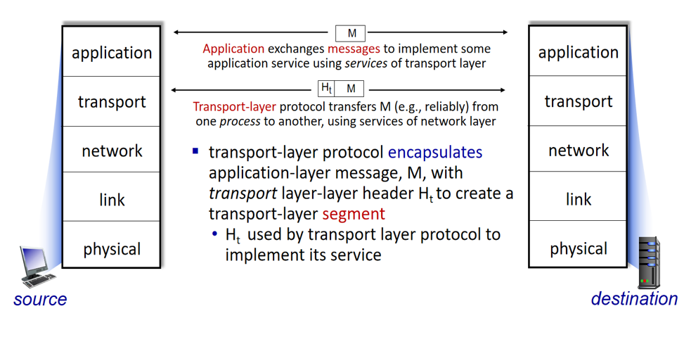
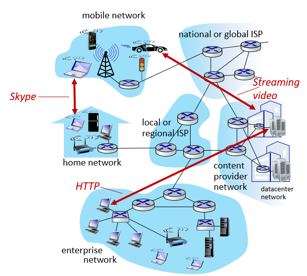
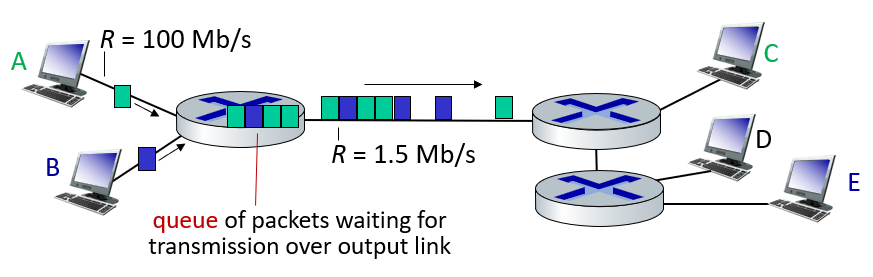
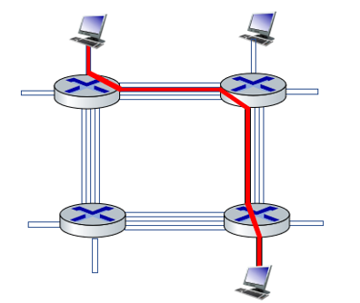
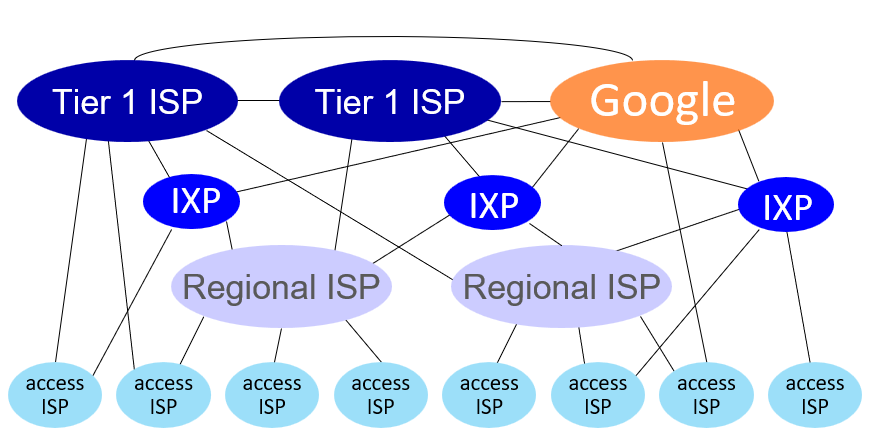
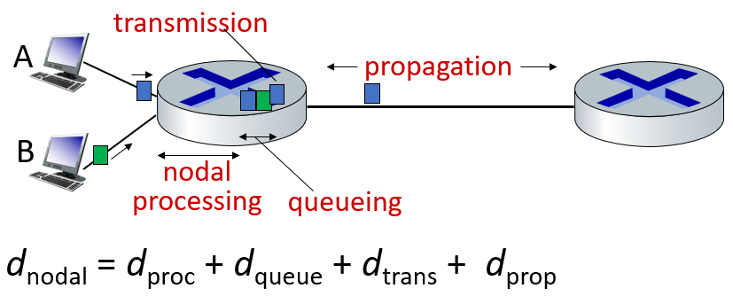

0. Introduction
Architecture(逻辑层面)
Layers：网络之间进行分层
Protocols：描述同一层次的关系
Services：描述垂直的关系，下层为上层提供服务

每层的数据单元：
- Application Layer： massage
- Transport Layer： segment
- Network Layer： package
- Link Layer： frame
- Physical Layer: bit
Internet Structure(物理层面)
Network edge
- Host: takes application message, breaks into packets and transmit them
- Server:
- Access network (包括家庭网络和大学网络)：• residential • institutional • mobile
Network core
Packet forwarding
Functions: routing （global 通过forwarding table 计算下步的接口）, forwarding（local 在这个路由中switching对应的接口）

Packet Switching vs Circuit Switching
Packet Switching ：将长报文划分为较小的数据块（现在网络在用使用的方式）（不需要预定，但不保证）
特点：Store and forward：在交换机能够开始向输出链路传输该分组的第一个比特之前，必须接受到整个分组。

Circuit Switching： 预留了通信所需要的资源（需要预定）
方式：
- FDM：划分不同的频率
- TDM：划分不同的时间段

Internet Structure: Global View

At “center”: small # of well-connected large networks
- “tier-1” commercial ISPs (e.g., Level 3, Sprint, AT&T, NTT)： national & international coverage
- content provider networks (e.g., Google, Facebook): private network that connects its data centers to Internet, often bypassing tier-1, regional ISPs
Performance Metrics
- Packet loss（无线网络中损失较大， 路由排队时也会出现丢包）
- Throughput（实际值） =》 bandwidth（理论值）
- Packet delay
d(proc)(处理时延)：决定该分组导向何处所需的时间；检查比特级别的差错；流量控制
d(queue)(排队时延)： 在队列中排队所花费的时间
d(trans)(传输时延)：路由器推出分组所需要的时间 => 包的大小
d(prop)(传播时延)： 从一台路由到另一台所需的时间 => 传播物理特性